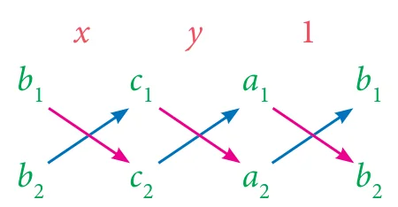
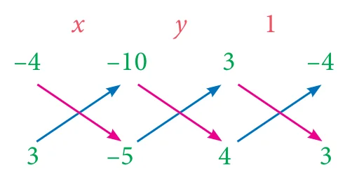
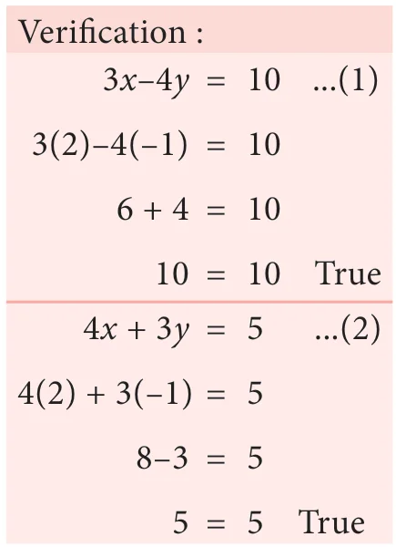
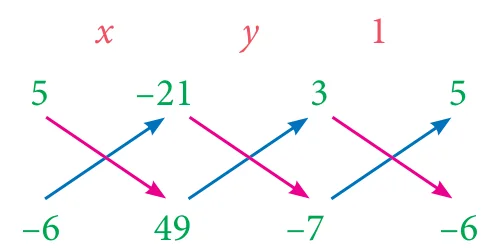
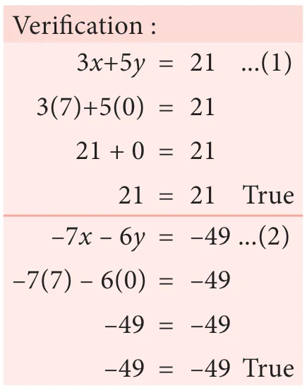
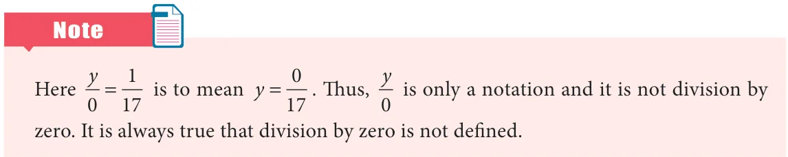

- Solve by the method of elimination
- \(2x - y = 3\); \(3x + y = 7\)
- \(x - y = 5\); \(3x + 2y = 25\)
- \(\frac{x}{10} + \frac{y}{5} = 14\); \(\frac{x}{8} + \frac{y}{6} = 15\)
- \(3(2x + y) = 7xy\); \(3(x + 3y) = 11xy\)
- \(\frac{4}{x} + 5y = 7\); \(\frac{3}{x} + 4y = 5\)
- \(13x + 11y = 70\); \(11x + 13y = 74\)
- The monthly income of \(A\) and \(B\) are in the ratio 3:4 and their monthly expenditures are in the ratio 5:7. If each saves ₹ 5,000 per month, find the monthly income of each.
- Five years ago, a man was seven times as old as his son, while five year hence, the man will be four times as old as his son. Find their present age.
Solving by Cross Multiplication Method
The substitution and elimination methods involves many arithmetic operations, whereas the cross multiplication method utilize the coefficients effectively, which simplifies the procedure to get the solution. This method of cross multiplication is so called because we draw cross ways between the numbers in the denominators and cross multiply the coefficients along the arrows ahead. Now let us discuss this method as follows:
Suppose we are given a pair of linear simultaneous equations such as
\(a_1x + b_1y + c_1 = 0 \quad ...(1)\)
\(a_2x + b_2y + c_2 = 0 \quad ...(2)\)
such that \(\frac{a_1}{a_2} \neq \frac{b_1}{b_2}\). We can solve them as follows :
\((1) \times b_2 - (2) \times b_1\) gives \(b_2(a_1x + b_1y + c_1) - b_1(a_2x + b_2y + c_2) = 0\)
\(\Rightarrow x(a_1b_2 - a_2b_1) = (b_1c_2 - b_2c_1)\)
\(\Rightarrow x = \frac{(b_1c_2 - b_2c_1)}{(a_1b_2 - a_2b_1)}\)
\((1) \times a_2 - (2) \times a_1\) similarly can be considered and that will simplify to
\(y = \frac{(c_1a_2 - c_2a_1)}{(a_1b_2 - a_2b_1)}\)
Hence the solution for the system is

This can also be written as
\(\frac{x}{b_1c_2 - b_2c_1} = \frac{y}{c_1a_2 - c_2a_1} = \frac{1}{a_1b_2 - a_2b_1}\)
which can be remembered as

Example 3.52 Solve \(3x - 4y = 10\) and \(4x + 3y = 5\) by the method of cross multiplication.
Solution
The given system of equations are
\(3x - 4y = 10 \Rightarrow 3x - 4y - 10 = 0 \quad .....(1)\)
\(4x + 3y = 5 \Rightarrow 4x + 3y - 5 = 0 \quad .....(2)\)
For the cross multiplication method, we write the co-efficients as

\(\frac{x}{(-4)(-5) - (3)(-10)} = \frac{y}{(-10)(4) - (-5)(3)} = \frac{1}{(3)(3) - (4)(-4)}\)
\(\frac{x}{(20) - (-30)} = \frac{y}{(-40) - (-15)} = \frac{1}{(9) - (-16)}\)
\(\frac{x}{20 + 30} = \frac{y}{-40 + 15} = \frac{1}{9 + 16}\)
\(\frac{x}{50} = \frac{y}{-25} = \frac{1}{25}\)
Therefore, we get \(x = \frac{50}{25}\); \(y = \frac{-25}{25}\)
\(x = 2\); \(y = -1\)
Thus the solution is \(x = 2\), \(y = -1\).

Example 3.53 Solve by cross multiplication method : \(3x + 5y = 21\); \(-7x - 6y = -49\)
Solution
The given system of equations are \(3x + 5y - 21 = 0\); \(-7x - 6y + 49 = 0\)
Now using the coefficients for cross multiplication, we get,

\(\Rightarrow \frac{x}{(5)(49) - (-6)(-21)} = \frac{y}{(-21)(-7) - (49)(3)} = \frac{1}{(3)(-6) - (-7)(5)}\)
\(\frac{x}{119} = \frac{y}{0} = \frac{1}{17}\)
\(\Rightarrow \frac{x}{119} = \frac{1}{17}\), \(\frac{y}{0} = \frac{1}{17}\)
\(\Rightarrow x = \frac{119}{17}\), \(y = \frac{0}{17}\)
\(\Rightarrow x = 7\), \(y = 0\)

